SC-154Landing page · the hero10 Oct 2026Design review
The hero film, live action: the brand and the distributor, the kiranas, the food bank and the staff sale, the paperwork, through one day, with real people.
Three options for the film, each a complete hero on the real kit with a draft clip rendered on Google Vertex AI: character sheets and keyframes from Nano Banana 2, one 8-second Veo 3.1 Fast clip per option at 720p without audio (two takes, the better one on the page). The full 15-second film at 1080p is made for the pick only. Every option loops under its Pause control, reads the four chapters in the strip under the copy, and starts both themes on the same frame (no night act, as decided). Every person is fictional, every pack unbranded, and no client is named. The switcher at the foot of every page swaps the film, so comparing is a click; under the hero a review-only storyboard shows the option's four keyframes.
I want to look at the hero animated movie of Landing page, I now you to use Google video/image generation plugins to come up with a really awesome video projecting the journey of the application in about 15 seconds. It should be using realistic human characters instead of cartoon, showing journey of brands/FMCG/Retailer/Distributor/kiranas/donations/Staff sale. Create a plan what Google Vertex AI models can be used and expected pricing
It needs to professional and aesthetically pleasing
SC-111's film: a miniature town in four acts, 14.2 s, looping, the dark theme starting at its night. The maintainer asked for the same journey told with realistic human characters, made with Google's models.
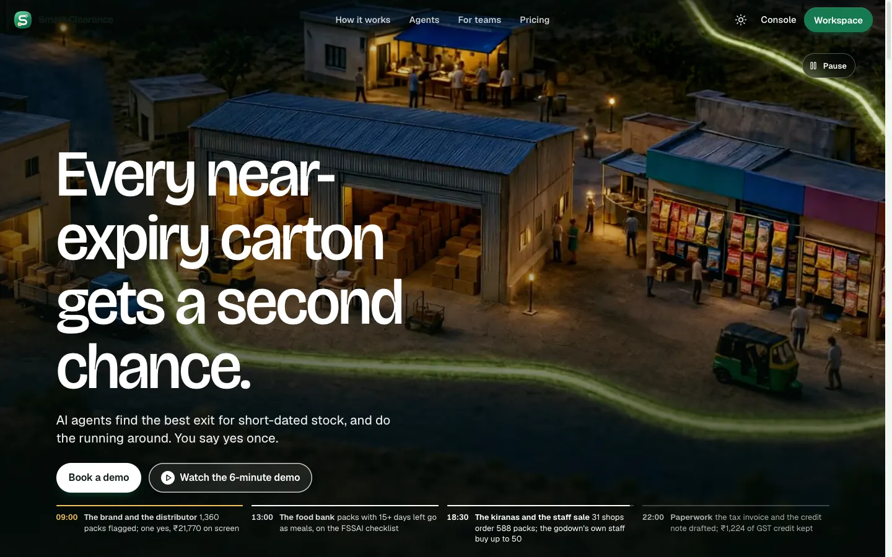
Light, 1440
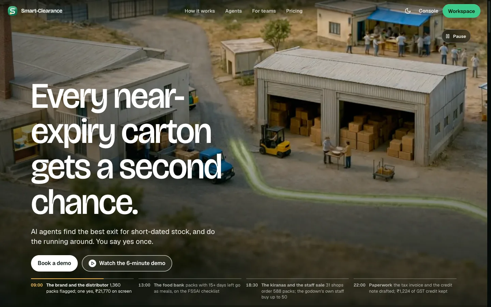
Dark, 1440
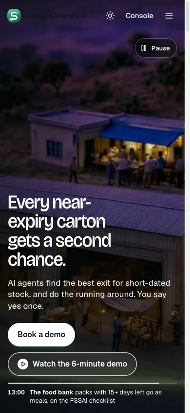
A phone, light
The models, and what they cost
Verified on Google's Vertex AI pricing page and the project's model registry on 10 Oct 2026, in USD. Veo is billed per second of output, and silent video is half the price, so the hero (which plays muted) is made without audio.
Model
Serves at
Price
Used for
Veo 3.1 (veo-3.1-generate-001, GA)
us-central1
$0.20 a second without audio at 720p or 1080p ($0.40 with); $0.40 / $0.60 at 4K
the final film: four 8 s clips × 3 takes ≈ $19 (A or C), two clips ≈ $10 (B)
Veo 3.1 Fast (GA)
us-central1
$0.08 a second at 720p, $0.10 at 1080p, without audio
the drafts on this board: six 8 s clips, $3.84
Veo 3.1 Lite (preview)
us-central1
$0.03 / $0.05 a second
not used
Nano Banana 2 (gemini-3.1-flash-image)
global only
$0.067 an image at 1K, $0.101 at 2K, $0.151 at 4K
3 character sheets, 12 keyframes, 3 cleaning edits: $1.81
Nano Banana Pro (gemini-3-pro-image)
global only
$0.134 at 1K–2K, $0.24 at 4K
not needed
Gemini Omni Flash (GA)
us-central1
about $0.10 a second at 720p, audio forced
the alternative not taken: 10 s at most, no first or last frame, no silent option
Veo 3.1's rules shaped the plan: clips are 4, 6 or 8 s, and 1080p, reference images and a last frame all need 8 s; extension is 720p only, so a 1080p film is cut from clips; people need allow_adult; every frame carries a SynthID watermark. This round cost $5.66 (£4.24) against the $9 asked for. The scripts that made everything are tracked in design3/tools/vertex-media/, with a .prompt.json beside every asset.
The cast and the chapters
Three fictional people, each with a character sheet that every keyframe they are in takes as a reference: the brand's supply planner, the distributor, a kirana shop owner. No client, product or batch is named anywhere; the cartons are plain kraft with a sage-green band and the packets solid colours with no lettering (three keyframes came back with a sign or a printed packet and were cleaned before Veo saw them). No children. The strip reads the journey's order, and every figure is computed in core/money.js.
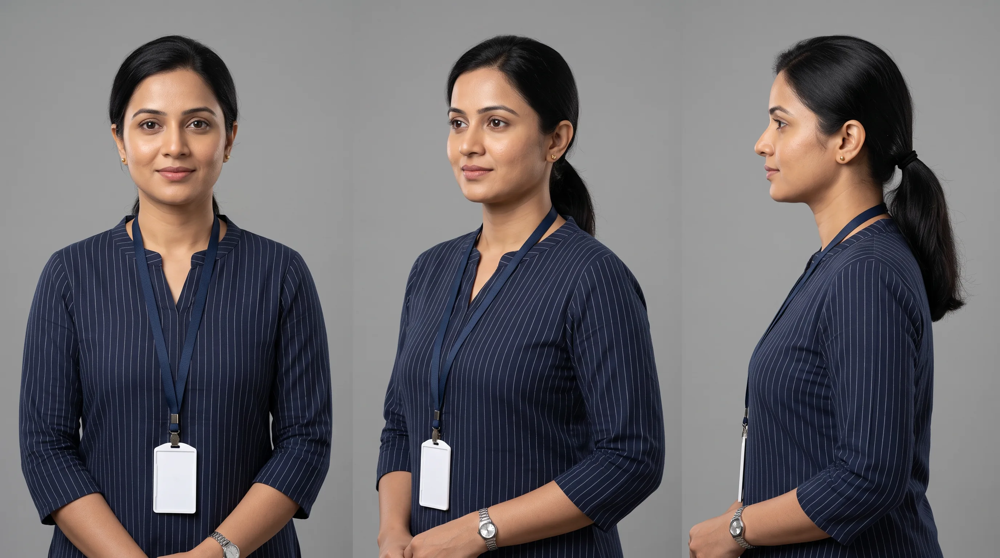
The brand's supply planner
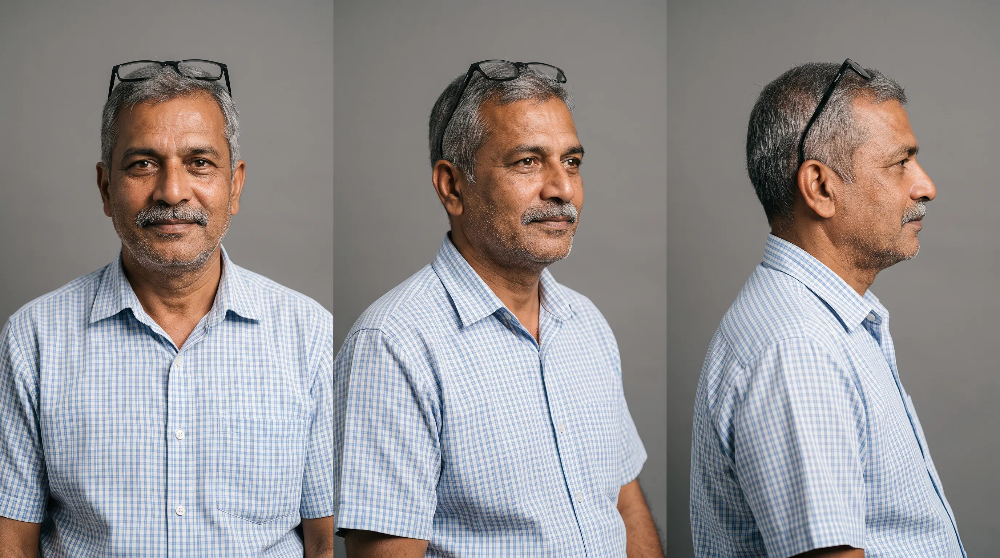
The distributor
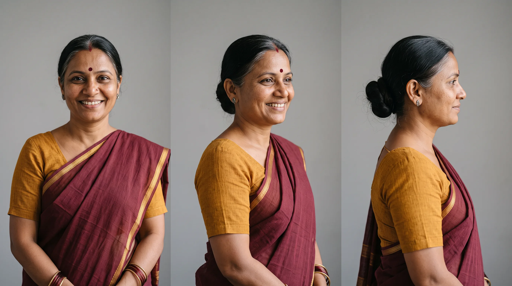
The kirana shop owner
Hour
Chapter
What the film shows
The strip reads
06:30
The brand and the distributor
Dawn at the factory's loading bay: the planner and the distributor over the plan on her phone, plain cartons onto the blue truck.
1,360 packs flagged; one yes, ₹21,770 on screen
11:00
The kiranas
High sun in the godown: the kirana owner lifts her crate at the counter while the distributor ticks his register.
31 shops order 588 packs, buy 10 get 2 free
18:00
The food bank and the staff sale
Violet dusk in the yard: the food bank's van loading at the left, the staff-sale table at the gate.
packs with 15+ days left go as meals; the godown's own staff buy up to 50
21:30
Paperwork
Evening in the office over the godown: the papers, the tablet, chai raised.
the tax invoice and the credit note drafted; ₹1,224 of GST credit kept
The three options
Shared by all three: the same cast, the same four chapters, about 15 s at 1080p and 24 fps, looping under Pause, drifting with the scroll, both themes on the same first frame, the poster and the last chapter under reduced motion. What differs is how the camera tells it, and how the loop closes.
A · Four hours, four places
Recommended4 clips · dissolve loop
Four live-action chapters at four hours of one day, each one place and one action: the bay at dawn, the godown counter at noon, the yard at violet dusk (the van, then the table), the office in the evening. One 8 s clip a chapter, image to video from its keyframe, trimmed to about 4 s and chained through half-second dissolves; the tail dissolves into the head. The page's own camera leans 1.25× on each chapter's subject, as SC-111's did on each act's place.
The draft: chapter 1, the bay at dawn, the camera pushing in (Veo 3.1 Fast, 720p, 8 s)
06:30 · the bay11:00 · the counter
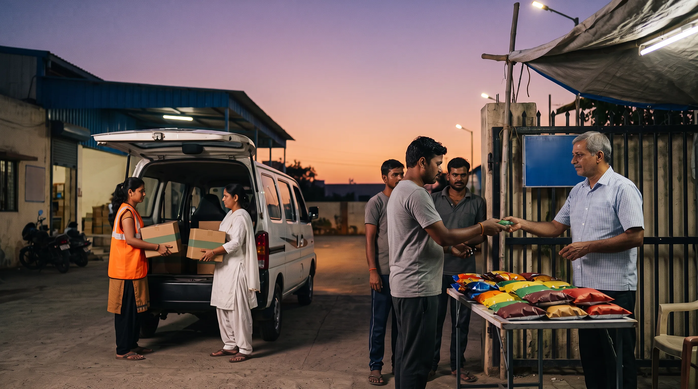
18:00 · the van and the table
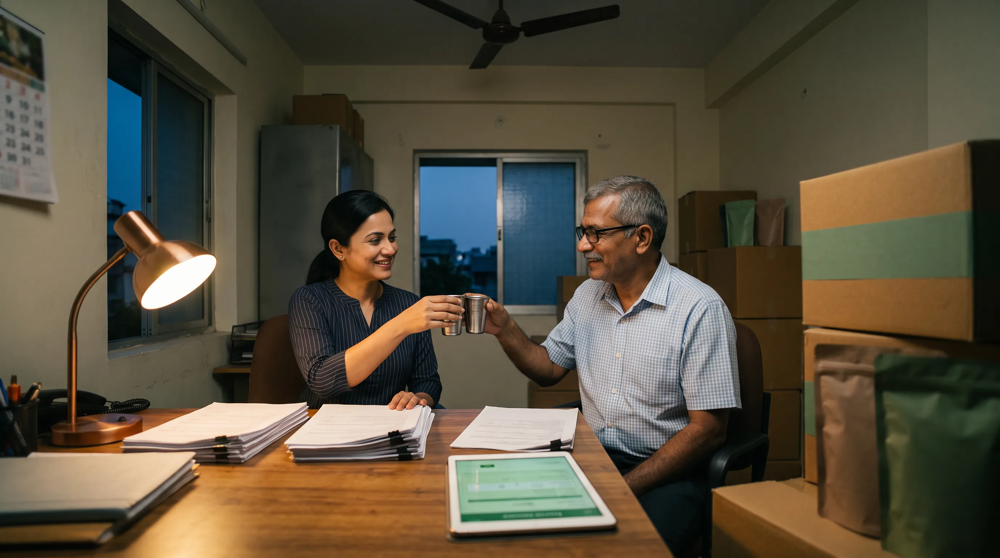
21:30 · the office
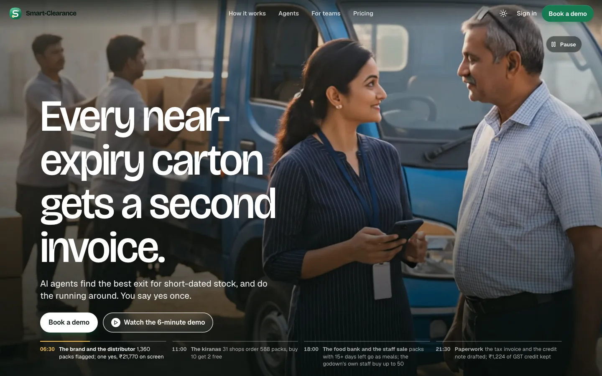
Light, 1440
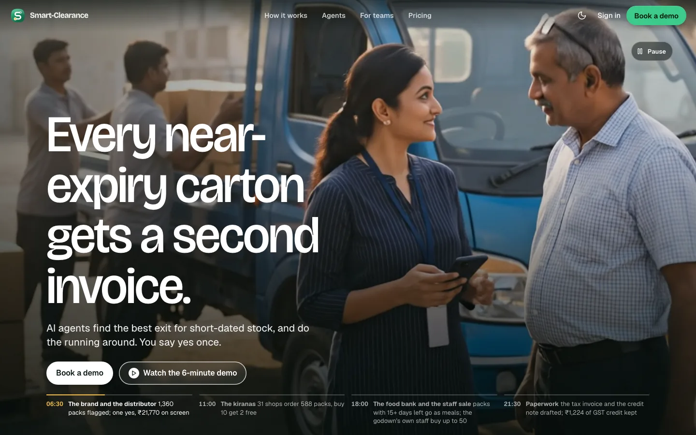
Dark, 1440
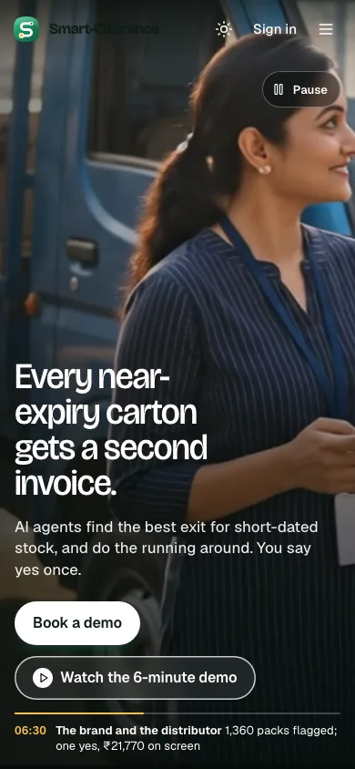
A phone
The page played through, ten seconds
Why A. The clearest story and the safest to generate: each clip asks Veo for one place and one action, which is what it does best, and the faces hold because every clip starts on a keyframe made from the sheets. Cutting between places is ordinary film grammar; only the loop needs continuity, and a dissolve through the dawn frame gives it. Trade-off: the loop is a dissolve, not a match. The build: four clips at Veo 3.1 1080p (about $19 with retakes), the cut in assemble.py, posters from the film's own frames; site.jsx's hero loses its night offset; the port's Hero.svelte, figures.ts, media.ts and plates.ts follow.
B · One carton, hand to hand
2 clips · matched loop
One unbranded carton passed from hand to hand across the day, centred in the frame the whole way: the planner hands it to the distributor at dawn, he slides it across his counter to the kirana owner, it rides to the van and the staff table at dusk and rests on the desk in the evening, and comes back to the bay. Two 8 s clips chained by their last frames (the counter, then the bay again), so the film's final frame returns to its first: a true matched loop, no dissolve.
The draft: clip 1, the carton from the bay to the counter, Veo's own dissolve between the places (Veo 3.1 Fast, 720p, 8 s)
06:30 · the bay
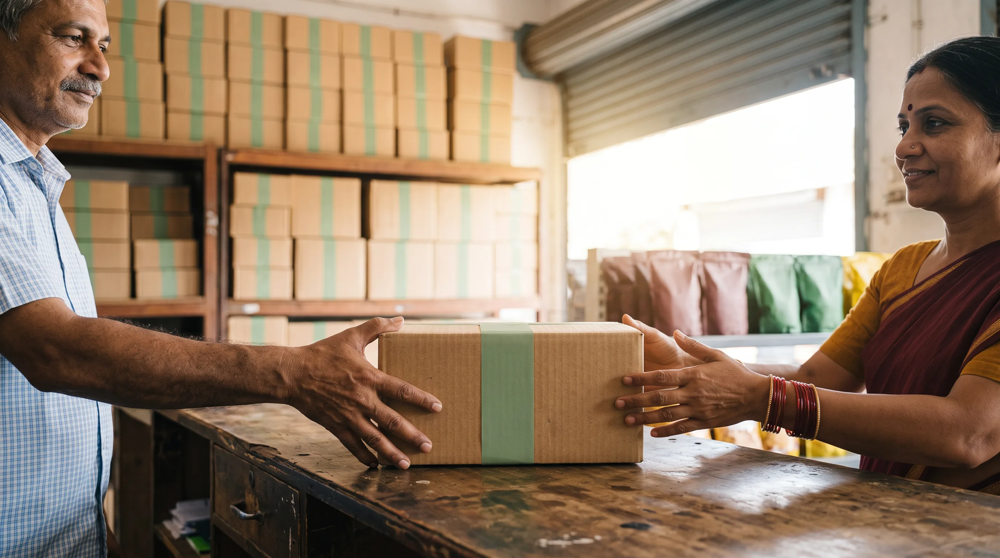
11:00 · the counter
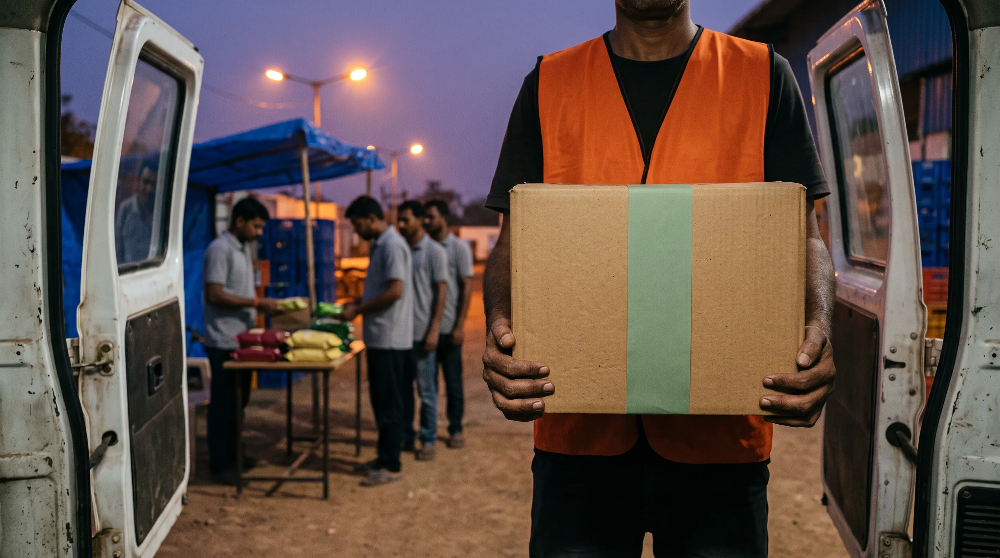
18:00 · the van and the table21:30 · the desk
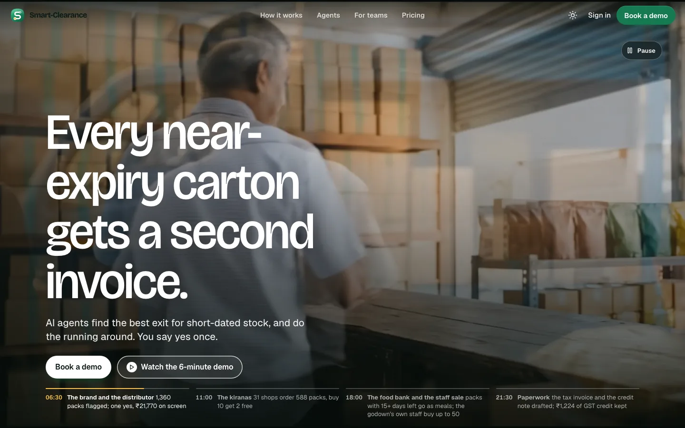
Light, 1440
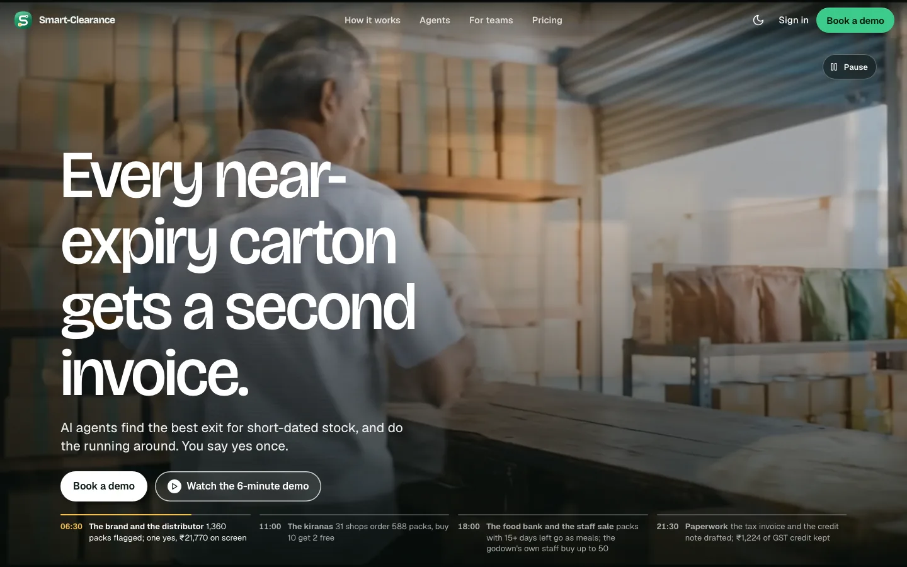
Dark, 1440A phone
The page played through, ten seconds
Why B. The most cinematic idea: one object carries the whole journey, and the loop closes exactly. Trade-off: the world has to change inside a shot. Asked to carry the carton from the bay into the godown, Veo renders a dissolve of its own (visible in the draft at about 4 s), and the people drift through it; a build would spend its retakes on that join. It is the cheapest to build (two clips, about $10). The build: two clips at 1080p chained by their last frames, the loop checked frame against frame by seams.py.
C · One yard, one day
4 clips · the day turns
The live-action heir to SC-111's one town: a locked-off camera at the gate of the distributor's yard while a whole day passes in front of it. Dawn, the truck and the handshake; noon, the autorickshaws and the shopkeepers' crates; violet dusk, the van and the staff table; the blue hour, the yard quiet and the office window lit. Four 8 s clips, each starting on one keyframe and ending on the next (the three later ones are edits of the dawn frame, so the yard holds), the last ending on the first: the day turns without a cut.
The draft: dawn to noon in one locked-off shot (Veo 3.1 Fast, 720p, 8 s)
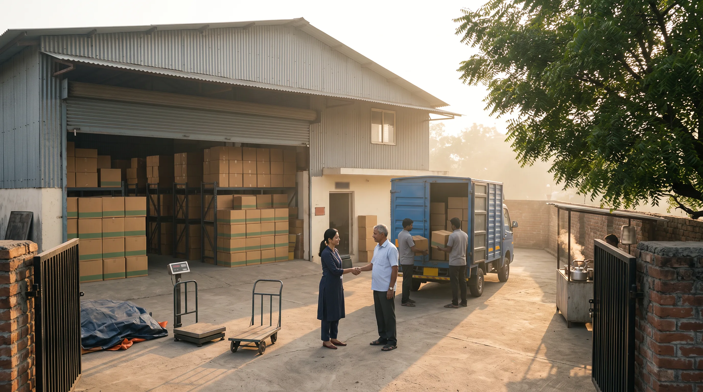
06:30 · dawn
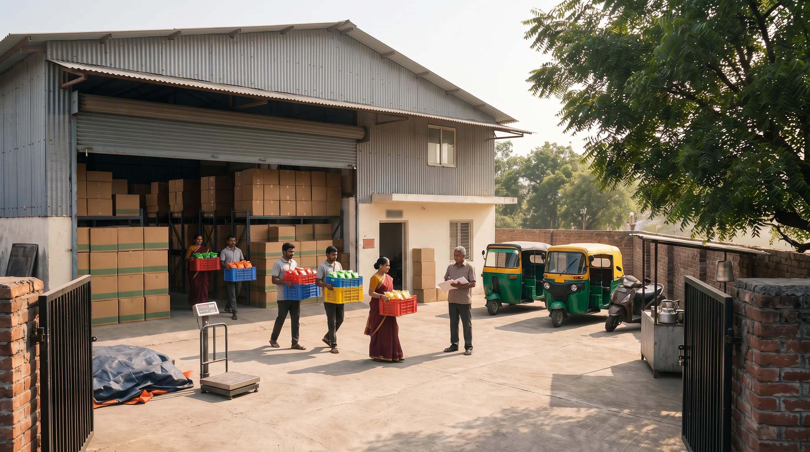
11:00 · noon
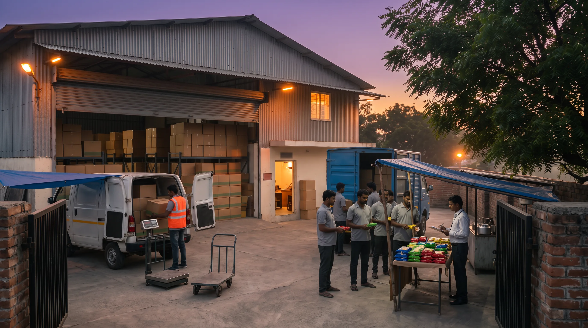
18:00 · dusk
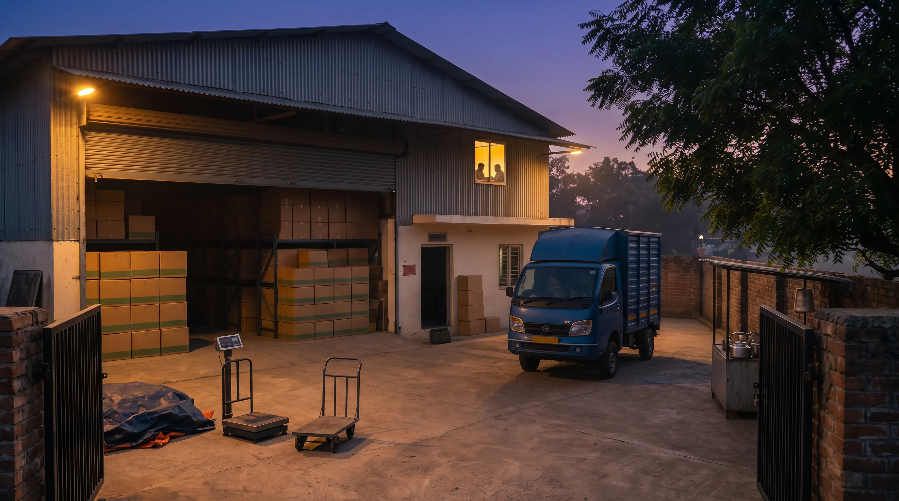
21:30 · the blue hour
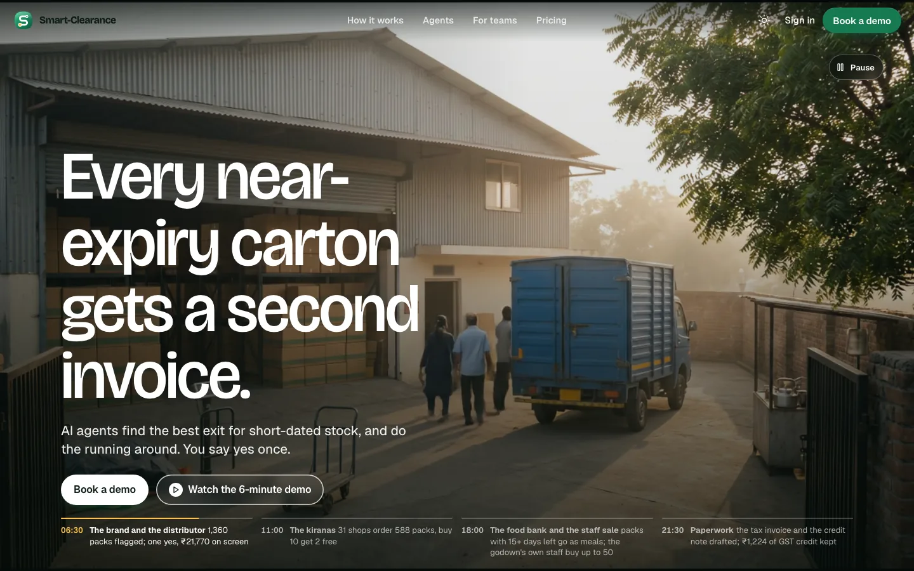
Light, 1440Dark, 1440
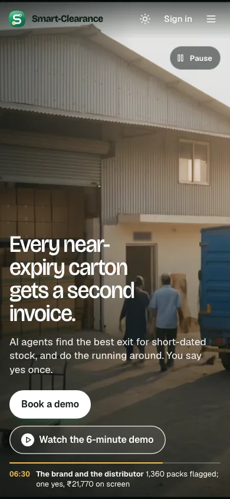
A phone
The page played through, ten seconds
Why C. It keeps what the maintainer liked in SC-111, the day turning and the violet dusk, with real people in a real yard, and the camera never moves, so the heading always has a calm ground. Trade-off: the people are small, so the story is in the strip rather than on faces; and in both drafts the truck leaves through the gate past the camera and fills the frame for a second (the build would have it reverse out of the far side). The build: four clips at 1080p, each with a first and a last frame (about $19 with retakes).
Checks made
Every page renders without console errors in Chromium at 1440 × 900 and 390 × 844, light and dark (design3/tools/capture.mjs).
The drafts' contact sheets were read frame by frame: no lettering or brand in A's and B's clips; C's take 2 keeps the yard's geometry to the noon keyframe; B's take 2 carries the carton through its dissolve to the counter's frame. A's take 2 shows a number plate for a moment, so take 1 is on the page.
Nothing was held back by Veo's safety filter (rai_media_filtered 0 on all six clips); each took about 70 s.
The image models' registry ids lie: the -preview ids answer 404, and only the GA ids serve, on the global endpoint, at a few images a minute. veo.py doctor now checks with a free call.
The round cost $5.66 (cost.py), against the $9 the maintainer allowed.
No browser suite was run (SC-55).
The ask
One option: A (recommended), B or C, or none of these and what to change. A mixed answer works too ("A's chapters with C's dusk as the third"). Two things to say with the pick, if you have a view: the page's camera lean (1.25, or SC-111's 1.5), and whether the picked takes should be re-rendered at 4K for the build (about $13 more).